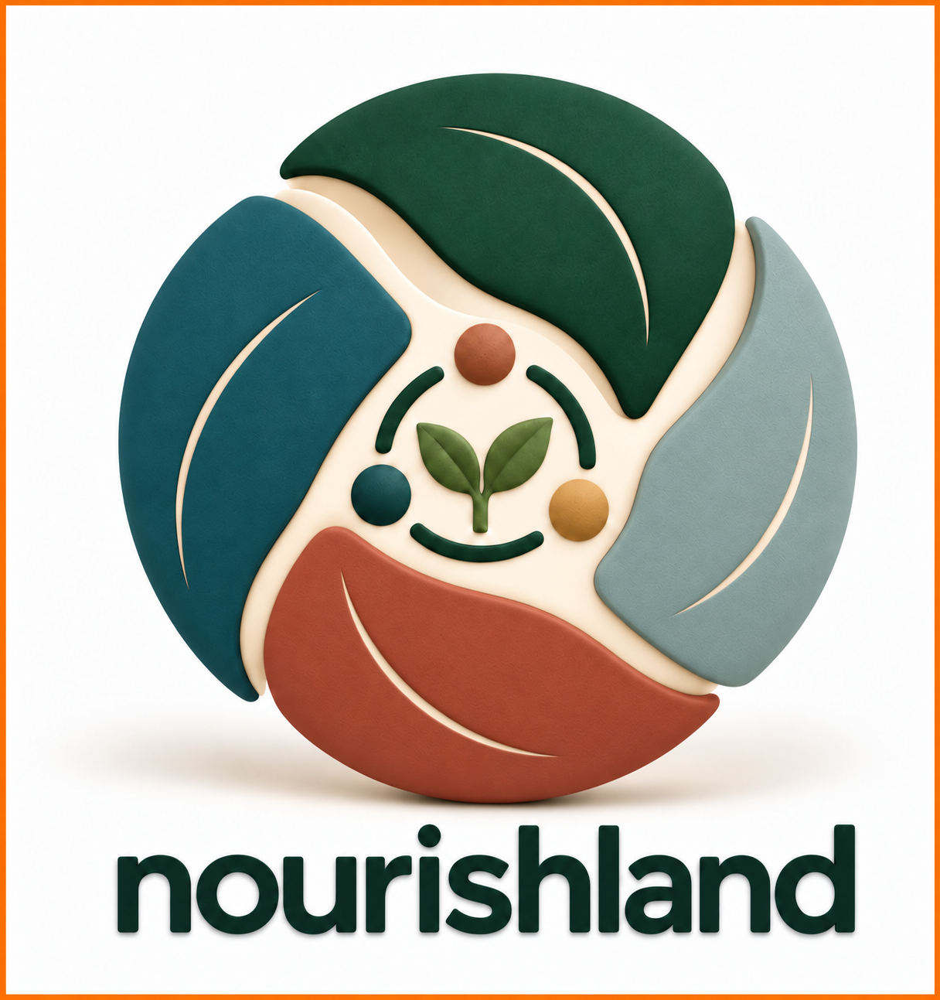
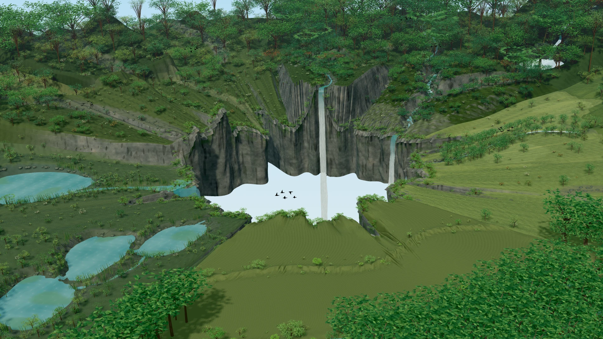

For students
Explore an idea, try a preview and help us shape experiences you would want to learn with.
See the previews
nourishlandKNOWLEDGE, CONNECTED TO LIFELet’s collaborate
Education / Two connected directions
For students, educators and curious people: explore the living world through observation, practical questions and imaginative experiences.
01 / Food Forests & Solarpunk
Plant literacy and ecological relationships meet practical growing and possible futures.
Explore food forests02 / Immersive Nature Learning
Learning experiences that connect digital guidance with a real place, its plants and its stories.
Explore immersive learningLearning with purpose
Our pilot aims to help learners describe what they notice, ask better questions and explain a relationship using evidence from a place.
These are learning goals to develop and evaluate with educators, rather than measured outcomes from a completed programme.
Explore an idea, try a preview and help us shape experiences you would want to learn with.
See the previewsHelp define activities, review content and decide what meaningful learning would look like.
Shape the learningExplore a small collaborative pilot, a student project or a research question grounded in place.
Explore the pilotAn invitation to build together
For educators, students, universities and people with a place to share.
Education / Food Forests & Solarpunk
Explore plants as part of a living system, then ask how food-growing places could support learning, biodiversity and everyday life.
Food forests
Investigate canopy, shrubs, ground covers and roots. Compare their needs and roles, and consider how water, light and seasonal change shape a place.
Start with local conditions and reliable identification. A design that suits one climate or site may not suit another.
Open the food-forest learning guideThree questions to begin
Compare leaf shape, growth habit and seasonal features. Record uncertainty and check identification.
Connect to an activityLook for light, water, soil, pollinators and neighbouring plants. Separate observations from possible explanations.
Explore the layersConsider food, habitat, access and care. Discuss the trade-offs of different choices.
Take it into a pilotSolarpunk / imagination with a purpose
Solarpunk gives this direction room for imagination: greener neighbourhoods, shared growing spaces and technology that supports everyday relationships with nature.
Use it as a creative prompt. Learners can sketch a possibility, investigate its practical constraints and explain the choices behind it.
Learning direction in developmentAn invitation to build together
For educators, students, universities and people with a place to share.
Education / Immersive Nature Learning
A guide can turn a walk into an investigation. AR can add a new perspective while keeping attention on the plants and relationships around you.
A proposed activity: compare two plants in different light conditions. Describe what you see, consult the guide and discuss what else you would need to know.
Start with a small plot and a question worth exploring.
Look closely at its leaves, form and surroundings.
Use a guide or AR content to investigate what you notice.
Record an observation, compare ideas and reflect.
Guides & Adventures
A Guide provides observations, questions and explanations connected to a place. An Adventure adds a story or goal that gives the exploration a purpose.
The first pilot should use a small, reviewed educational package. Nature-generated Guides and Adventures are a future direction, with review and local context built into their development.
See the current browser previewsAR is one access point. The pilot should also offer a useful screen-based learning path.
An invitation to build together
For educators, students, universities and people with a place to share.
Platform / Creator + Explorer
Prepare knowledge in Creator. Discover it through Explorer. The foundation is a small place, meaningful content and a clear learning journey.
Organise a place, mark learning points and connect reviewed content into an educational package.
Explore CreatorVisit a place, open its learning points and follow a guide that connects observation with understanding.
Explore ExplorerThe intended 1.0 workflow. Individual tools are in development; the complete pilot journey still needs evaluation.
Different access points
Desktop Studio is the authoring direction. Field supports outdoor access. WebXR offers an experimental browser introduction, while native Unity work develops the spatial experience.
Public publishing and a seamless shared app ecosystem are development goals. Each preview has its own access and device limits.
View demos & access notesAn invitation to build together
For educators, students, universities and people with a place to share.
Platform / Creator
For educators, site hosts and content collaborators preparing knowledge that learners can explore.
The intended workflow
Creator is a development preview. Project access may require author sign-in; creating or saving a draft does not publish it. Shared publishing and native handoff remain in development.
Open browser Creator Read access notesAn invitation to build together
For educators, students, universities and people with a place to share.
Platform / Explorer
For students and visitors discovering the knowledge held in a real place.
The proposed experience
Follow a short guide through a marked plot. Open a learning point, examine the real plant and connect what you notice with an explanation or activity.
Totems are the proposed place markers; Orbs are clusters of connected knowledge. These visual ideas give discovery a recognisable form while the guide keeps the learning purposeful.
Help us test what makes a route understandable, accessible and engaging.
See the first pilot scopeThe current browser demonstrations introduce parts of the experience. They are separate from a complete, deployed pilot learning trail.
Explore current demosAn invitation to build together
For educators, students, universities and people with a place to share.
The pilot / Building toward version 1.0
Our next milestone connects a real plot, a reviewed educational package and useful digital access—then tests the experience with learners.
A place to begin
Hillyards is Nourishland’s first owned development example: a place to explore how food-forest knowledge can connect to learning activities and digital tools.
The next step is to define a manageable pilot plot and develop its learning experience with collaborators.
Development example · pilot being shapedA focused scope we can build, try and improve together.
A small marked plot, selected plants and a clear route through the experience.
The learner’s viewReviewed plant content, observation prompts and a short guide with optional AR.
The educational directionFeedback from students and educators on usability, access and learning.
Help shape the pilotVersion 1.0 is a target for a functioning pilot, not a claim that the entire ecosystem is ready. We’re seeking collaborators and development support to reach it.
An invitation to build together
For educators, students, universities and people with a place to share.
Demos & access / Current previews
Choose a preview by what you want to do. These are development access points; they do not yet form a complete public pilot service.
Explore an early spatial-learning experience. Immersive features depend on your browser and device; a supported headset may be needed for the full AR view.
Launch WebXR introductionExplore outdoor learning activities and supported personal observations. Offline content and shared project synchronisation are still developing.
Open Field previewOrganise project areas and records. Author sign-in and permissions may apply; public publishing is not available through this website.
Open CreatorInside a saved Creator project, Flat map and Interactive Map (IMAP) provide different views of its records. Physical XR anchors and printed tags are a separate placement layer.
Unity Creator and Explorer are the native headset direction. A public installer and shared cross-device workflow are not offered here yet.
Discuss developmentAbout Nourishland
Nourishland is an emerging educational project connecting plant literacy, food forests and immersive technology with real places.
An idea with roots
The project brings practical ecological learning together with imaginative ways to explore. A real plant, a patch of land and a good question can open many paths into knowledge.
The long-term vision includes connected places, educational packages and Creator and Explorer tools. The immediate focus is one useful, functional pilot.
We’re inviting people to help develop the content, technology and educational approach—and to question the assumptions along the way.
Meet through a conversationAn invitation to build together
For educators, students, universities and people with a place to share.
Collaborate / Shape the first pilot
The first step is a conversation about the vision and how we could develop it together.
Help define learning goals, review content or develop a focused teaching and research project.
Start a conversationBring your curiosity, design ideas or research interests. Help shape an experience you would want to use.
Share your interestExplore how a garden, campus or small plot could become a place for collaborative learning.
Introduce your placeHelp scope and resource the content, tools and evaluation needed for a first functional pilot.
Discuss developmentLet’s begin simply
Include your role, your place or organisation if relevant, and the contribution or question you have in mind.
Email Nourishland info@nourishland.orgOpens your email app. We’re inviting co-development conversations; delivery, dates and funding would be defined together.
A new way to grow · food forest learning
A food forest begins with a place, its conditions and the people who care for it. It takes inspiration from forest structures and relationships, then brings food and useful plants into that living pattern.
There is no single layout for every site. Light, water, soil, climate, terrain, access and purpose shape what can thrive. Observation comes before a confident design.
A living system · a place to learn
Food forests can combine harvest, habitat, beauty, shelter and learning in one evolving place.
Food Forests & Solarpunk
Solarpunk gives this learning area a hopeful direction: practical, community-scale futures shaped around care for land and living systems.
Explore how food, shelter, energy, water, shared spaces and local knowledge might fit together. Use future-facing ideas as prompts for design and discussion, grounded in the conditions of each real place.
Solarpunk examples are possibilities to explore, not universal plans. Local ecology, culture, access and evidence should guide real decisions.
Why Nourishland connects to food forests
High diversity means more than having many species. Each may hold several roles, functions and relationships that change with place and time. The learning value of that richness is limited when useful information is difficult to find, connect or understand.
Nourishland is being developed to link plant and place records with their roles, functions, relationships, sources and learning paths. People can follow one question into a wider picture, while keeping the real place and its changing conditions in view.
See how the platform connects knowledge01 · Read the layers
Forests use vertical space in different ways. Select a layer to explore the roles it can play in a food forest.

A place in the system
Upper-storey trees can capture sunlight, shape shade and shelter, and create a high framework for other life. Their suitability depends on mature size, climate, water and the space available.
02 · Follow the functions
Consider harvest, habitat, soil, water, shelter and human experience together. Which functions are possible depends on species, design, place and care.
Choose a mix of plants whose harvests can arrive across seasons and years.
Notice how layers, cycles and relationships can guide a cultivated system.
Flowering plants and suitable habitat can support pollinators and seed setting.
Shade, scent, beauty and places to pause can make a landscape welcoming.
A varied planting can spread risk and create different kinds of habitat and harvest.
Leaves, roots and fungi contribute organic matter and soil relationships over time.
Soil cover and structure can help water soak in, while site conditions shape where it flows.
Healthy soil can retain moisture for plants between rain events.
Plants turn sunlight into growth; soil and perennial structure hold some of that value over time.
03 · Find your starting question
Food forest education can welcome a beginner and still leave room for deep inquiry. Move through the five questions or choose the one that matters now.
Imagine the possibilities
An ornamental sanctuary. A productive farm. A sensory garden. A source of favourite ingredients, rare fruit, herbs, medicine or seasonal abundance. A biodiversity refuge, a livelihood or a legacy. Many landscapes combine several purposes.
04 · Choose an orientation
These are tendencies, not fixed categories or a ranking. Many mature places hold parts of all three.
Orderly · low-input · systems-led
Clear spacing and access paths; plants selected for resilience and function; practical to maintain and adapt.
Long-term stability, labour efficiency and self-regulation over unnecessary intervention.
A legible system that can age well and help people understand ecological functions.
05 · Ideas and practitioners
Many people draw on practitioners who have shaped natural farming, permaculture, landscape design and syntropic agroforestry. Their ideas grew from different places and contexts; use them as questions and approaches, not one universal recipe.
Begin with observation. Reduce disturbance where it is useful, and ask what the land is already doing.

From learning to place
Hillyards Food Forest is NourishlandXR’s first owned example for exploring how food-forest knowledge can connect to a real place.
Explore the Hillyards project